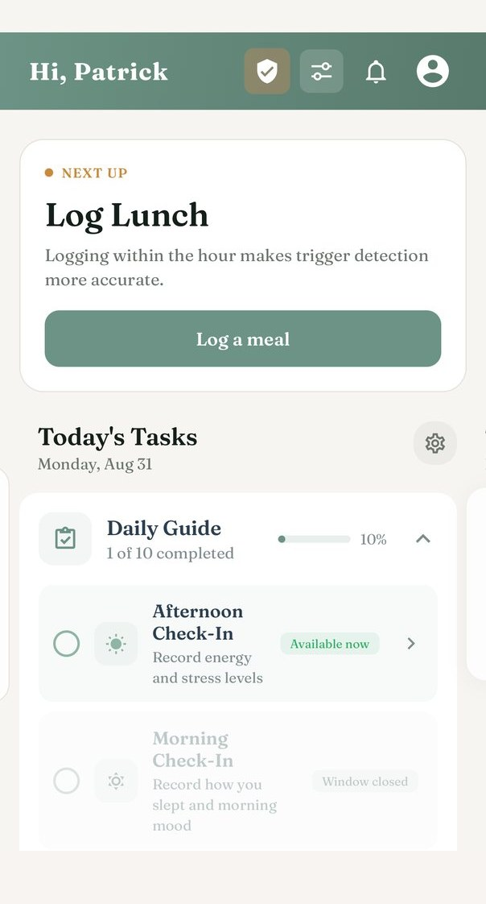
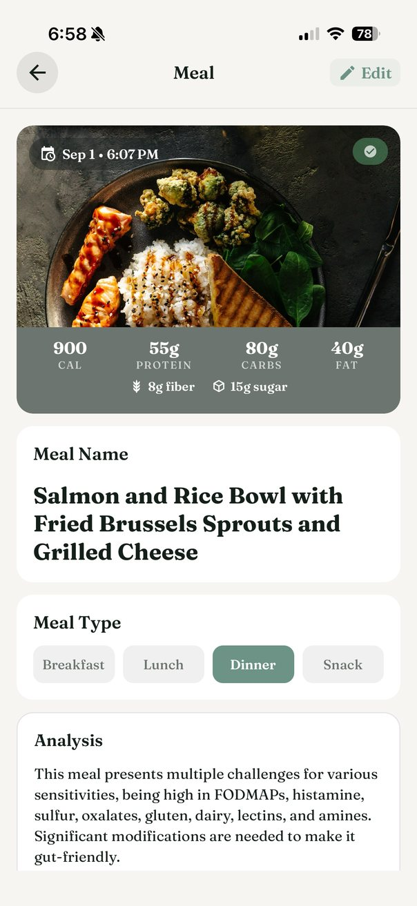
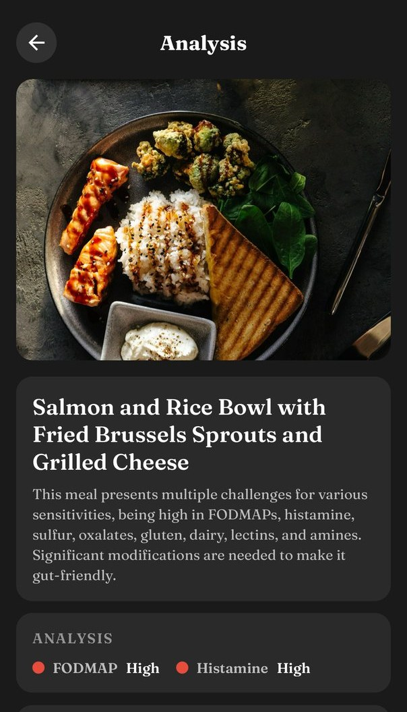
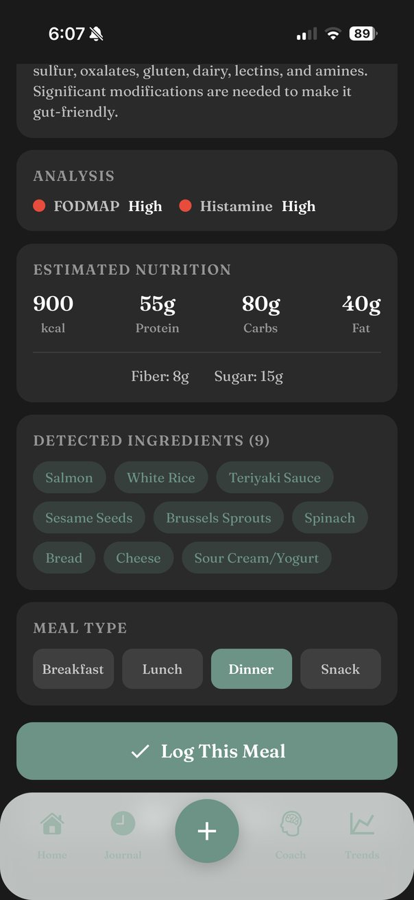
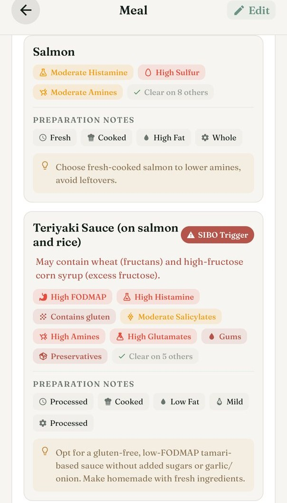
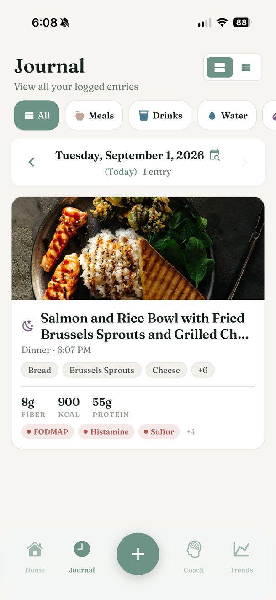
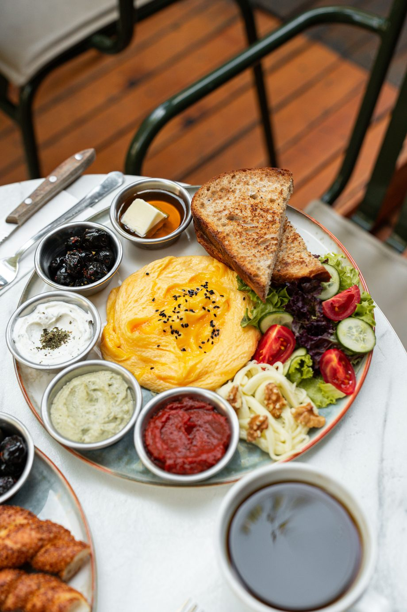

Find the foods behind how you feel.
Log a meal, log a symptom. Flori finds the pattern between them.
For IBS, SIBO, histamine intolerance, and everyone still working it out.


How it works
Four steps, and the fourth is the one your doctor wants.
-
01
Log a meal in seconds
Photograph it, say it out loud, or scan the barcode. Flori fills in the ingredients, calories and macros so you can put your phone back down.
-
02
See what it flags
Every food is checked against FODMAPs, histamine, gluten, lactose, salicylates, oxalates and a dozen more. You hear about the ones that flag. The rest stay quiet.
-
03
Find the pattern
Record how you feel and Flori lines it up against what you ate. Bloating on Tuesday and again on Friday stops being a coincidence and starts pointing somewhere.
-
04
Take it to your doctor
One tap turns weeks of logs into a PDF your GP or dietitian can read in a minute: meals, symptoms, severities and the correlations between them.
Alongside meals it tracks drinks, water, stool, mood, sleep, stress, exercise, supplements and fasting. Out of that come a daily Gut Score, trends and weekly patterns, plant diversity, fiber and macro goals, Food Trials for testing one food properly, recipes that suit your triggers, guided breathing, and a coach that answers questions about your own logs rather than giving general advice.
Inside the app
What it actually looks like.




Try it
This is a real scan. Tap anything on the plate.
One photograph of a Mediterranean breakfast, run through Flori. It looks like the healthiest thing on the menu. It flags eight different ways, and a single small bowl of red dip accounts for most of them.

Mediterranean Breakfast Platter
The whole plate
Or one item at a time
Flori runs this on whatever you photograph, against the sensitivities you actually have. This page shows all of them.
Most people arrive here after months of guessing. A food diary in a notebook, a hunch about bread, a flare with no obvious cause.
Flori is the part guessing cannot do. It holds every meal and every symptom in one place, long enough for the pattern to show itself.